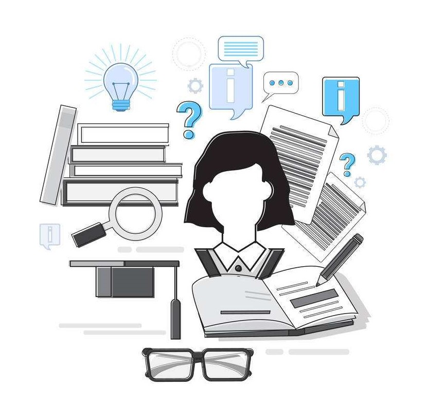

Computing Changes Education
the Development of Computers and Education
- The improvement of computer-based education(1976-1986): This period witnessed the beginning of new technologies: the co-existence of large-scale computer, PC, microcomputer and computer learning center, as well as the emergence of Word, Windows and other softwares. Instructional design and educational media were becoming more and more connected with CAL.
- Single-machine multimedia learning(1987-1996): The arise of laptop, WWW, webpages and MPC and so on has made it possible to form an interaction between computers, teaching, learning education. However, most of the computers still were not connected to the Internet.
- Cooperative learning using the Internet(1997-2006): The speed of Internet development has gone beyond expectations. Educational softwares started to equip graphic and video functions. Applications such as WebCT, SMS, Wikipedia, MITOCW, Blackboard, Google and YouTube came out.
- Digital age online-learning(2007-): A lot of MOOC platforms merged after the popularity of smartphones, social media, wifi and mobile network.
Computing Eliminates the Boundary of Education

Computer reduces the limitations of time, space and threshold of education. Before the applicaiton of computers-related techonologies, studying is not convenient as it is today. People can't access courses offered by universities that are far from them and they can't share their opinions with so many people from at the same time. With computing, we can simply search others' research findings by a click of mouse, we can be more easily inspired by different thoughts. Besides, people from places with small libraries can read professional books online and people failed to enter universities can watch MOOC vedios at home. Computing is reducing the barriers of knowledge and make it accessible for people from different backgrounds.
click homepage